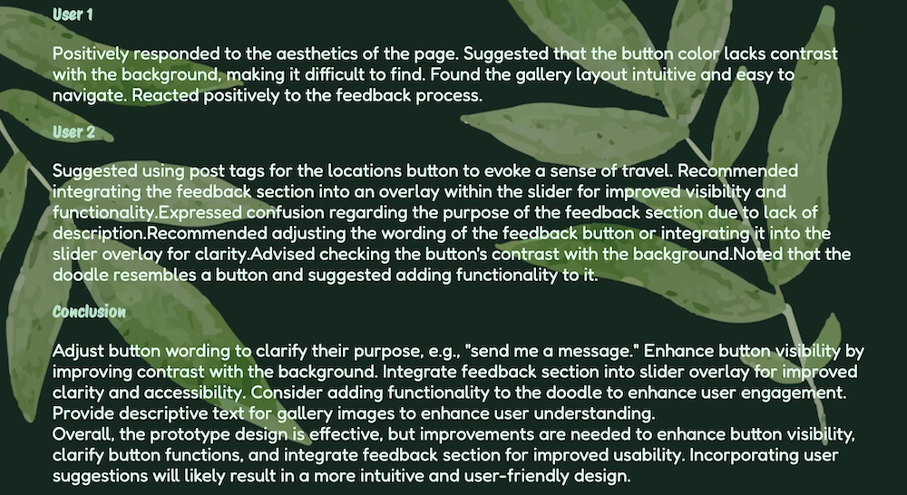

EveryPicture - interactive website
Interactive Website
Mock Prototype
Project Brief
Embark on a digital trip through memory lane with EveryPicture: it blends modern design with timeless polaroid aesthetics to evoke nostalgia. As users explore our site, they'll notice a unique polaroid-style overlay adding retro charm. Continuously refining the site for optimal performance, I tackle issues like slow image duplication, particularly on slower connections. Besides functionality, I prioritize enhancing user engagement -- the animation features elevate the overlay experience, while descriptive text/icons ensure seamless navigation. To add a touch of fun, I've included a feedback feature, allowing users to share thoughts inspired by images with a simple click. With images categorized for easy exploration, users can enjoy a diverse and immersive journey through our collection.
Usability testing - Interviews
During the interview, I observed the users navigating through the mock prototype, during this process I spotted aspects that are confusing to the users I didn't realize before; I also asked them about their impression on the website and what they would like to see.
